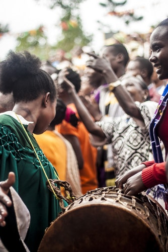

African music is part of everyday activities - everyone joins in clapping, singing and dancing to the music. Also ,
african music part of rites and ceremonies where it is performed by specialist master drummers and court
musicians and it's not normally written down but passed on through oral tradition.
The influence of black African music is widespread. It came over to America with the African slaves and combined with the folk music
of the European settlers to produce new styles of music such as blues, gospel and jazz. These went on to form the basis of pop music today.
African Drums
They are usually made from wood, metal, earthenware or large gourds, which are hard-rinded fruit.
They come in different shapes - tubular drums, bowl-shaped drums and friction drums. Some have one head, others have two.
They come in different sizes. The bigger the drum - the lower the note. The more tension in the drum head - the higher the note produced.
They sometimes have rattling metal and jingles attached to the outside or seeds and beads placed inside the drum and they are played using hands or sticks or both.
They are sometimes held under the armpit or with a sling.

Here's an interesting music genre that was originated in Africa!